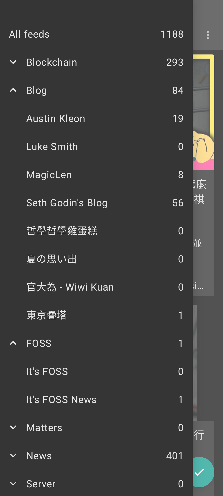
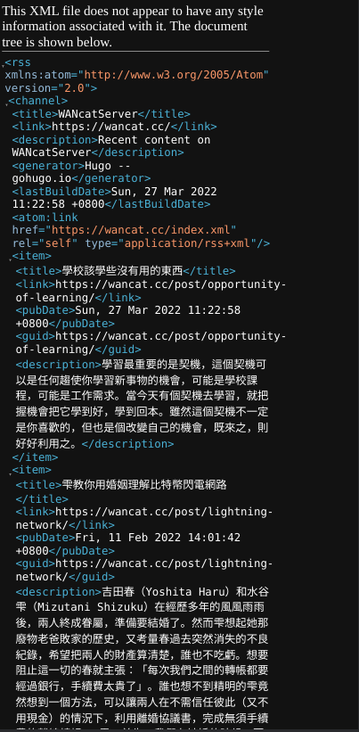

用 RSS 將網站備份到區塊鏈
宏信 / #decentralizeHK#decentralizeHK 在做什麼
- 將香港媒體備份至區塊鏈永存
- 蘋果日報、立場新聞
完成了「過去內容」的備份
如何讓新的內容持續整合？
如何不靠 programming 就能備份？
RSS
Really Simple Syndication
Podcast 背後技術
用一個單一網址訂閱網站上的新文章
記錄文章的 metadata
RSS 閱讀器：Feeder on F-Droid


RSS 如何幫助內容備份？
ISCN RSS Issuer
給我 RSS，許你一輩子
從 RSS 中截取文章 metadata，註冊成 ISCN
去中心化儲存 IPFS、Arweave
ISCN RSS Issuer
可套用至所有提供 RSS 的網頁
容易持續發佈新內容
開放格式